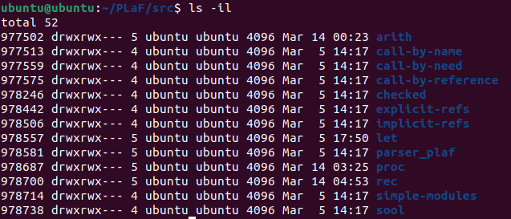

5 File Subsystem
5.1 Basic Concepts of Files
UNIX is simple because everything is a file, including directories, I/O devices, programs, network connections, and RAM.
ls -l ~ will show the files in the home directory and some of the info stored about each file, it's output will look like the img below
the first column is file types and permissions, it is a 10 char string where the first char is the file type, and the other 9 are the permissions.
The file types that POSIX uses are listed below, these are different from the file types you may think of such as .jpg, or .png, those file types are on the application level to choose the correct software to decode/display the file, while file types listed below are at a system level. In the notes i'll use the abbreviations of a file to refer to a file type.
- or r: regular file; 3
d: directory;
b: block special file (e.g., storage devices);
c: character special file(e.g., graphics cards, keyboards, mouse, main memory);
l: symbolic link;
p: pipe (both named and unnamed); and
s: socket
all file types besides r files have an internal data structure, ex: a directory is essentially a list of files inside the directory.
r files are just a sequence of bytes, and therefore the application file types such as .jpg or .png are all regular files.
UNIX is a time-sharing OS, which means multiple users can be using it and it's resources at the same time, they just need their own accounts. This is convenient but not very secure or private.
In UNIX there are 3 roles, user, group, and other, use the acronym ugo to remember them. The user is the owner/creator of a file, and upon creating the file is associated with 1 of the groups the user belongs to, and if a person is not the user or associated with the same group, they are other.
There are 3 modes of access, read(r)/write(w)/execute(x), and 3 roles, ugo, 3*3=9 so 9 char string for permission. If a role doesn't have permission, it will be a - (img below)
Representing permissions as a char string is easy for the user, but in reality it is stored as 9 bytes, and when each permission char is essentially a bool which is a bit, this is overkill.
In reality each role can have their permissions represented in 3 bits, (1 for each permission, see img below).
3*3 = 9, so 9 bits are what is really needed.
To find the octal value of a role's file permission, the formula is written in C syntax: value = r?4:0 + w?2:0 + x?1:0
Another way of viewing it is
if (r == 1){
value +=4
}
if (w == 1){
value += 2
}
if (x == 1){
value += 1
}
The file with the permission string rw-r----- will have an octal number of 640 to represent it's permissions.
Sometimes there can also be special permissions besides r, w, or x such as s or t. They are called special permissions.
s stands for "special" and can appear on either the user or group's x permission, it's also called setUID. When it is on the user role, when executing the file, ALWAYS act as if the user is the one executing it. When it is on the group role, when executing the file, ALWAYS act as if the group it's affiliated with is executing it.
An example of the s permission is the command that resets the user's password. -rwsr-xr-x 1 root root 63K Nov 29 2022 /usr/bin/passwd.
If the s is found on a directory file, all files in the directory will have the same group ownership as the directory.
A capital s, S means the user or group id has been set for a file, but it does not have permission to execute.
setUID only works on binary executables, not bash scripts
t stands for "sticky bit", and can only be found in the x permission in the others role. It has no effect on files, but on a directory, files under the directory can only be deleted by their owner and the root. An example is the directory /tmp/'s permission: drwxrwxrwt 15 root root 12K Dec 27 13:13 tmp.
The OS is responsible for retrieving this info called the metadata of each file. A simple way of doing this is creating a struct which holds all of the metadata for a file. This struct is called the index node or inode.
Here is all of the data the inode stores.
- The type of the file;
- The modeof the file (the set of read-write-execute permissions);
- The number of hard links to the file;
- The user ID of the owner of the file;
- The group ID to which the file belongs;
- The number of bytes in the file;
- An array of 15 disk-block addresses;
- The date and time the file was last accessed;
- The date and time the file was last modified;
- The date and time the inode was changed.
Each inode also has a positive int associated with it, that is unique to that inode only within its partition. So if two inodes have the same number, they are in different partitions. ls -il shows the number for the inode of each file (see img below).
Extra resources Linux source code: https://github.com/torvalds/linux/blob/master/include/linux/fs.h#L620 Linux kernel development second edition (skip to inode section): https://litux.nl/mirror/kerneldevelopment/0672327201/toc.html
5.2 Retrieving File Info
The stat command shows more detailed info about a file than ls -l (see img below)
A lot of stat's outputs aren't needed for this course such as device or IO block.
stat uses the system API to retrieve file info, we can use the interface to implement our own version of stat to perform file system related operations.
To get all of the metadata of a file, first create a struct stat, which is declared in <sys/stat.h>. It is declared in the header as
struct stat {
dev_t st_dev; /* ID of device containing file */
ino_t st_ino; /* inode number */
mode_t st_mode; /* file type and permission bits */
nlink_t st_nlink; /* number of hard links */
uid_t st_uid; /* user ID of owner */
gid_t st_gid; /* group ID of owner */
dev_t st_rdev; /* device ID (if special file) */
off_t st_size; /* total size, in bytes */
blksize_t st_blksize; /* the "preferred" block size for FS I/O. */
blkcnt_t st_blocks; /* number of 512B blocks allocated */
time_t st_atime; /* time of last access */
time_t st_mtime; /* time of last modification */
time_t st_ctime; /* time of last status change */
};
Next use stat() which is declared as int stat(const char* path, struct stat* buf); within the same header file.
path is the path of the file, and buf is the address of the struct stat we just made.
upon executing, if the execution is unsuccessful, errno will be set and it will return -1, if it is successful it will return 0. This is common amonst most functions from the system API.
ex:
#include <sys/stat.h>
#include <stdio.h>
#include <stdlib.h>
int main() {
struct stat fileinfo;
char filename[] = "filestat.c";
int status = stat(filename, &fileinfo);
if (!status) {
perror("stat");
exit(EXIT_FAILURE);
}
printf("Inode number: %llu\n", fileinfo.st_ino);
printf("User ID: %d\n", fileinfo.st_uid);
printf("Total size: %d\n", fileinfo.st_size);
printf("Mode: %d\n", fileinfo.st_mode);
return 0;
}
When running the code example above, printing st_mode as an int will produce some large number.
From the declaration of struct stat, st_mode is "file type and permission bits". So to get the information we need we need to know which bits to look at.
Bits 15-12: File type
11-9: Perm Changing
8-6: User
5-3: Group
2-0: Other
The perm changing bits are the setuid bit, setgid bit, and sticky bit. You don't need to worry about their functions for this course.
st_mode will include info on file types and file permissions, but it encodes info into a single variable.
The way to extact info from st_mode is through macros. Below are the macros for each file type(1 if true, 0 if false) and permission, note the permission macros represent binary numbers and bitwise operations can be performed on them.
File type macros S_ISREG(st_mode) : regular file; S_ISDIR(st_mode) : directory; S_ISCHR(st_mode) : character special file; S_ISBLK(st_mode) : block special file; S_ISFIFO(st_mode) : pipe or FIFO; S_ISLNK(st_mode) : symbolic link; S_ISSOCK(st_mode) : socket. Permission macros
#define S_IRWXU 0000700 /* RWX mask for owner */
#define S_IRUSR 0000400 /* R for owner */
#define S_IWUSR 0000200 /* W for owner */
#define S_IXUSR 0000100 /* X for owner */
#define S_IRWXG 0000070 /* RWX mask for group */
#define S_IRGRP 0000040 /* R for group */
#define S_IWGRP 0000020 /* W for group */
#define S_IXGRP 0000010 /* X for group */
#define S_IRWXO 0000007 /* RWX mask for other */
#define S_IROTH 0000004 /* R for other */
#define S_IWOTH 0000002 /* W for other */
#define S_IXOTH 0000001 /* X for other */
#define S_ISUID 0004000 /* set user id on execution */
#define S_ISGID 0002000 /* set group id on execution */
#define S_ISVTX 0001000 /* save swapped text after use */
To get info on whether a file has a permission or not, just use & with the statstruct.st_mode
Code examples below
/*** filetype.c ***/
#include <sys/stat.h>
#include <stdio.h>
#include <stdlib.h>
int main() {
struct stat fileinfo;
char filename[] = "filestat.c";
stat(filename, &fileinfo);
if (S_ISREG(fileinfo.st_mode)) puts("Regular file.");
else if (S_ISDIR(fileinfo.st_mode)) puts("Directory.");
else puts("It's not a regular file or directory.");
return 0;
}
/*** checkperm.c ***/
#include <sys/stat.h>
#include <stdio.h>
#include <stdlib.h>
int main() {
struct stat fileinfo;
char filename[] = "filestat.c";
stat(filename, &fileinfo);
if (S_IWUSR & fileinfo.st_mode) puts("Owner can write.");
else puts("Owner cannot write.");
return 0;
}
5.3 Reading Directories
in struct stat, the file name is not one of the variables. In reality the file name is stored in the directory as a string.
Directories are folders at a basic level, but in reality is more like a table.
While we visualize folders being stored as a tree-like structure, in reality it is all linear. Files and directories are stored on the hard drive, and file content is stored in data blocks, while directory content is stored in directory blocks. (see 5.3 and 5.4 below).
Each directory in reality is a table, with two columns and n rows, where n is the size of the directory. The first column is the inode number, while the second column is the directory entry and is of type struct dirent and is defined in <dirent.h>.
When you try to open a file, the system indexes the inode list on the hard drive using the inode number, and then read the content in the data blocks pointed at by the inode objects.
struct dirent {
ino_t d_ino; /* inode number */
off_t d_off; /* offset to the next dirent */
unsigned short d_reclen; /* length of this record */
unsigned char d_type; /* type of file; not supported by all file system types */
char d_name[256]; /* filename, always ends with '\0' */
};
We only care for the inode number d_ino and file name d_name.
The DIR struct in <dirent.h> represents a directory stream. NEVER declare an object to the DIR struct, and instead only declare DIR pointers. This is because DIR is an incomplete type, similar to an array with no size.
See img below for a comparison on how to open/close/read directories compared to files.
Some extra info
Always check if opendir() is null.
Readdir will iterate through each entry in the directory, and will return null when it reaches the end. It is a stream.
Code example below on how to use these functions properly.
/*** ls.c ***/
#include <dirent.h>
#include <stdio.h>
#include <stdlib.h>
int main (int argc, char** argv) {
DIR* dp;
struct dirent* dirp;
/* Exit if the pathname was not passed */
if (argc != 2) exit(EXIT_FAILURE);
/* Open directory, and exit if DIR object returned is NULL*/
dp = opendir(argv[1]);
if (dp == NULL) {
fprintf(stderr, "Cannot open %s\n", argv[1]);
exit(EXIT_FAILURE);
}
/* Use readdir in a loop until it returns NULL */
while ((dirp = readdir(dp)) != NULL) {
printf("%s\n", dirp->d_name);
}
closedir(dp);
exit(EXIT_SUCCESS);
}
The following functions are from <unistd.h>
When navigating a file system, cd and pwd are the most commonly used commands.
The getcwd() function is defined as char* getcwd(char* buf, size_t size); and will return the absolute path, and modify the buf parameter.
char temp[256];
getcwd(temp, 256);
This will now put the return value of getcwd() which is the current working directory in temp. If the size of the return value is larger than the size of temp, temp becomes NULL.
char* temp;
temp = getcwd(NULL, 0);
Is an alternative way that will dynamically allocate temp, but it must be freed afterwards because it is dynamically allocated.
int chdir(const char* path); will change the directory of the executing program. In other words, it will change the directory of it's own thread and not the shells.
Here is an example of both functions being used.
/*** chdir.c ***/
#include <stdio.h>
#include <stdlib.h>
#include <unistd.h>
int main (int argc, char** argv) {
char* pathname = getcwd(NULL, 0);
if (pathname == NULL) exit(EXIT_FAILURE);
printf("C program dir: %s\n", pathname);
chdir(argv[1]);
pathname = getcwd(NULL, 0);
if (pathname == NULL) exit(EXIT_FAILURE);
printf("C program dir changed to: %s\n", pathname);
free(pathname);
exit(EXIT_SUCCESS);
}
The following functions are declared in <sys/stat.h>, they are to create and delete directories respectively.
#include <sys/stat.h>
/* Create directories */
int mkdir(const char* pathname, mode_t mode);
/* Delete a directory and it has to be empty */
int rmdir(const char* pathname);
5.4 File I/O
Processes often deal with files.
In order to perform I/O operations, the process must first open the file.
The process opening the file must track it's current status (when it was opened, if it can be written to, where the user is in the file like what line and char)
To do this the kernel creates a struct file object, called the file-description
struct file {
struct inode* f_inode;
unsigned int f_flags;
loff_t f_pos;
... /* for this course the rest don't matter */
};
f_flags are flags which indicate which I/O operations are allowed on a file. (ex: read-only, write-only)
f_pos is the current writing position or file offset, loff_t is 64 bits.
and a pointer to the struct inode of a file.
Each process also has a file descriptor table which is an array of objects of struct fd
struct fd {
struct file* file;
unsigned int flags;
};
Each entry in the array points to an object of struct file which represents a file opened by the process. Each the index of each element is called the file descriptor and it is the main handle for File I/O.
When a process starts executing, it opens 3 files. stdin, stdout, and stderr. These are entries 0, 1, and 2 in the table respectively. When a new file is opened, it creates an object struct file, connect it to the inode of the file, then create a struct fd and adds the struct fd to the file descriptor table. The new objects index in the table is the file descriptor for that file.
When closed the struct fd is deleted, and that file descriptor can be used again.
(See 5.6 below for ex)
The open() function is in the <fcntl.h> header and is declared as int open(const char* pathname, int flags);. It returns the file descriptor that is then assigned to the file, which will always be the lowest avaliable unsigned int. If a file can't be opened, it sets errno and returns -1.
The flags parameter is the permission of the I/O and it must have one of these macros.
O_RDONLY : read only;
O_WRONLY : write only;
O_RDWR : read and write.
There are more such as O_CREAT for creating a file if it's path does not exist.
Macros can be combined using the or operator \.
For a list of all macros, see: https://man7.org/linux/man-pages/man2/open.2.html
Ex: int fd = open("test.log", O_WRONLY | O_CREAT | O_APPEND); will open test.log, and if it can't it will make test.log, and it will append content written to the end of the file.
To close a file and remove its file descriptor and it's entry in the file descriptor table, use int close(int fd); from the <unistd.h> header.
The read/write functions are defined as
#include <unistd.h>
ssize_t read (int fd, const void* buf, size_t count); /*textbook had a blank gap where const is, probs a typo bc its const in write func*/
ssize_t write(int fd, const void* buf, size_t count);
read() will read up to count bytes, from the file descriptor fd, and put it into the buffer starting at buf
write() will write up to count bytes starting at buf to the file pointed to by the file descriptor fd.
When successful it will return the number of bytes read/write, or 0 if it reaches the end of the file.
When it errors, it will return -1.
r files are sequences of bytes, so the functions start operating at an offset in that sequence, shift a number of bytes to the end of the file, and return that number. (See img below)
On Linux 32 or 64 bit systems, read() and similar syscalls will transfer at most 0x7ffff000 (2,147,479,552) bytes. Returning the # of bytes actually transferred.
Both functions are operating on bytes, when writing a string to a file this isn't a problem bc 1 char = 1 byte. It is tricker to write ints to a file though. Ex:
int a = 0x5678AFFF;
write(fd, &a, sizeof(int));
will write the int to the file, but when reading it, it will be garbage because the int can't be presented in ascii values. The workaround to properly write an int to a file is seen below:
char* arr[] = {"56", "78", "AF", "FF"};
for (int i = 0; i < 4; i ++) {
write(fd, arr+i, 2);
}
There is also no guarantee that for low level syscalls, execution will succeed and do as expected. Ex:
char* str = "Hello!";
write(fd, str, 6);
seems correct, but is buggy since we can't garuntee that it will write all 6 characters to the file. Always check the return value of write to ensure it matches the expected value. Ex:
char* str = "Hello!";
if (write(fd, str, 6) != 6) {
fprintf(stderr, "Not complete.\n");
}
Also note this code below is also wrong
char* str = "Hello!";
while (write(fd, str, 6) != 6);
After the first write() call even if less than 6 chars are written, the f_pos (file offset) has already been shifted.
This may cause an output like HHHellHelHellHellHelloHeHello!
Both read()/write() change f_pos implicitly.
It can also be changes using lseek() it is in the <unistd.h> header and declared as off_t lseek(int fd, off_t offset, int whence);, the letter l in the name stands for long ints,
off_t : offset in bytes, 32 or 64 bit.
whence is one of three macros
SEEK_SET : relocate to the beginning of the file (offset of zero) +
offset. So it’s basically just offset;
SEEK_END : relocated to the end of the file (or, the size of the file) +
offset;
SEEK_CUR : relocate to its current location within the file + offset;
lseek() can only be used with some file types, ex: it will fail with pipe, FIFO, socket, or terminal files.
see img 5.8 below for lseek() example
5.5 Buffering
Since everything in UNIX is a file, to use I/O devices they must be connected to the file system.
Some devices need immediate access without delay (RAM, keyboard, monitor, etc). These are character special devices
Other devices "cache" some data first to not have as long access times(hard drive). These are block special devices
See img 5.9 below for details.
For block devices, getting access to a file on a hard drive is extremely slow. If we were to directly read or write, the delay would be too much. To solve this we create a "buffer cache" (buffer) in the main memory, which is inbetween the hard drive and file system.
When we open a file, the data of the file is copied to the cache. We then operate on the data in the buffer cache instead of the hard drive.
The buffer cache is not L1 or L2 cache (SRAM), but a data structure maintained by the kernel. The buffer can be considered an in-memory copy of the file.
During system boot, the kernel will allocate a few buffers in a location in memory. Each buffer has a data area and a buffer header. Data area: stores the copies from the hard drive Buffer header: identifies the buffer, is defined as: (for more detail see https://github.com/torvalds/linux/blob/master/include/linux/buffer_head.h#L60)
struct buffer_head {
unsigned long b_state; /* buffer state */
struct buffer_head* b_this_page; /* circular list of page's buffers */
struct page* b_page; /* the page this bh is mapped to */
sector_t b_blocknr; /* start block number */
char* b_data; /* pointer to data within the page */
struct block_device* b_bdev;
...
};
See img 5.10 above for example.
When a file is opened (assume r file on hard drive), the data blocks storing the file are copied to main memory. The kernel created buffer head structs based on how many data blocks are copied. b_this_page is used to link them linearly to make a circular linked list. All operations are done in this buffer, on close copy the blocks back and replace the old content in the hard drive.
Above was for the kernel space.
Below is for the user space.
To make a higher level of buffering, use the FILE* object, called streams from <stdio.h>.
Two ways to get files, low level: file descriptors, high level: streams.
stdin/stdout/stderr are actually defined as below in <stdio.h> (from Apple's open source library, link doesn't work)
#define stdin (&__sF[0])
#define stdout (&__sF[1])
#define stderr (&__sF[2])
They are also defined as such in the GNU C library (https://www.gnu.org/savannah-checkouts/gnu/libc/index.html)
FILE* stdin = (FILE *) &_IO_2_1_stdin_;
FILE* stdout = (FILE *) &_IO_2_1_stdout_;
FILE* stderr = (FILE *) &_IO_2_1_stderr_;
To open a file using <stdio.h>, we use fopen(), it does syscall open() for us, and associates the stream with the file descriptor. The file descriptor number can be found using the fileno() function. ex:
#include <stdio.h>
#include <stdlib.h>
int main (int argc, char** argv) {
FILE* stream = fopen(argv[1], "w");
if (stream == NULL) exit(EXIT_FAILURE);
int fd = fileno(stream);
printf("fd = %d\n", fd);
fclose(stream);
exit(EXIT_SUCCESS);
}
To open an existing file descriptor, use fdopen(), which creates a FILE struct and associates it with the descriptor. ex:
int fd = open(argv[1], O_RDWR);
FILE* stream = fdopen(fd, "w");
Another example of user space buffering is if we use fprintf() to write to a file.
Our perspective is the program is the file is written to.
In reality, it is written to the stdio buffer/stream buffer, not the real file. When we say "the actual I/O", we refer to the actual file, not the buffer.
The C stdio library has 3 buffering modes, fully buffered, line buffered, and unbuffered.
Fully buffered is used when reading/writing, and happens in 2 situations Reading: buffer is empty and needs to be filled Writing: buffer is full and needs to be emptied ex:
/*** fullybuffered.c ***/
#include <stdio.h>
#include <stdlib.h>
#include <sys/stat.h>
int main (int argc, char** argv) {
off_t size;
off_t old_size;
FILE* stream;
struct stat info;
stream = fopen(argv[1], "w");
stat(argv[1], &info);
size = info.st_size;
old_size = size;
printf("Current file size: %lld\n", size);
getchar();
while (1) {
if (size != old_size) {
printf("File size: %lld\n", size);
old_size = size;
getchar();
}
fprintf(stream, "0");
stat(argv[1], &info);
size = info.st_size;
}
exit(EXIT_SUCCESS);
}
The program uses an inf loop to write chars into a file using fprintf(). stat() is used in each iteration to get the current file size, and pause on file size change (if statement).
If the file is unbuffered in any place, then writing a char should change the file size.
Note how when the file changes, it changes in multiples of 4096. This means stdio buffers 4096 bytes when writing, and once it is full, it'll do the actual I/O and use the syscall write() to push everything in the buffer to the actual file. (See img 5.11 below)
The buffer itself will not be emptied once full, new data will just overwrite old data.
When the file stream buffer is full, the content will be written to the disk or hard drive. This is called flushing, and can be automatic (ex: the buffer is full, or the file is closed using fclose()), or manual (fflush() function)
The fflush() function is defined in <stdio.h> as int fflush(FILE* stream);.
Line buffering will flush everything from the buffer to the destination when a line is finished, ex: \n character. This is used with terminal devices, and stdout only whenstdout is connected to the terminal. Otherwise stdout is fully buffered.
Line buffering also has a limit, if the limit is reached without a \n, then everything is flushed and the final data may be shorter than expected.
Unbuffered is when I/O is immediate. ex: stderr which is never buffered. This means when writing to stderr the content is put into the hard drive immediately.
See example 5.2 below for an example of the impact different buffering types can have.
See img 5.12 for another img of buffering.